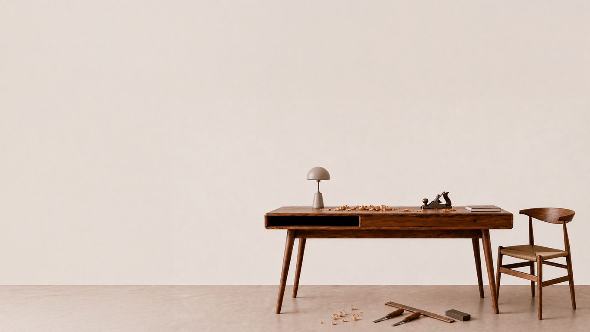
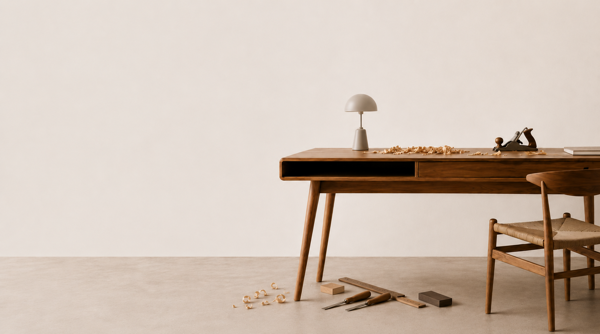

Antes
Después
Mesa ratona · Roble americano
Recuperación estructural + cambio de acabado con aceite natural

RESTAURAMOS MUEBLES CON HISTORIA PARA DARLES
UNA NUEVA VIDA EN EL PRESENTE.

Piezas restauradas
Años de oficio
Especies nativas trabajadas
Madera maciza
Filosofía
Los objetos acumulan experiencias, usos y significados a lo largo del tiempo. Restaurar no consiste en devolver un mueble a su estado anterior. Consiste en leer su historia, comprenderla y construir una nueva etapa.
RAÍZ trabaja en el cruce entre dos mundos que suelen aparecer separados: la precisión técnica del oficio artesanal y la sensibilidad estética del diseño contemporáneo. Esa tensión es el núcleo de cada intervención.
"Los muebles no terminan su historia cuando envejecen.
A través de una intervención consciente, pueden seguir habitando el presente."
Proceso
Antes de intervenir, escuchamos. Analizamos la pieza: su origen, técnicas constructivas, marcas de uso y el patrimonio cultural que representa. Ese diagnóstico define el camino.
Diseñamos una estrategia específica para cada pieza. Decidimos qué conservar, qué recuperar y qué reinterpretar. Nada es azaroso; cada decisión responde a criterios estéticos y técnicos.
El trabajo manual tiene un lugar central. La madera se trabaja con herramientas y tiempos que la industria no puede replicar. Tiempo, conocimiento y dedicación invertidos en cada proyecto.
El objeto no termina su historia con nosotros; la continúa. Documentamos cada intervención y acompañamos al cliente en el cuidado de la pieza para las próximas décadas.
Proyectos
Cada transformación es evidencia de lo que es posible cuando el oficio se cruza con el criterio de diseño.
Recuperación estructural + cambio de acabado con aceite natural
Restitución de herrajes originales + barniz al agua mate
Reparación de cajones + tapizado nuevo en cuero natural
Materiales
La calidad de una restauración depende de la honestidad de los materiales. Por eso trabajamos únicamente con maderas macizas, sin sustitutos ni compuestos. Cada especie tiene su propio carácter, sus vetas, su peso y su historia.
Veta oscura y pronunciada. Alta dureza. Pieza de carácter.
Estabilidad excepcional. Responde bien a todos los acabados.
Aroma único, peso liviano. Nativo de la región noreste.
Una de las maderas más duras de América. Color rojizo intenso.
Madera blanda con veta limpia. Ideal para piezas de diseño moderno.
Contacto
Contanos sobre tu mueble. Compartí fotos, contexto, historia. Así podemos entender qué tiene y hacia dónde puede ir.